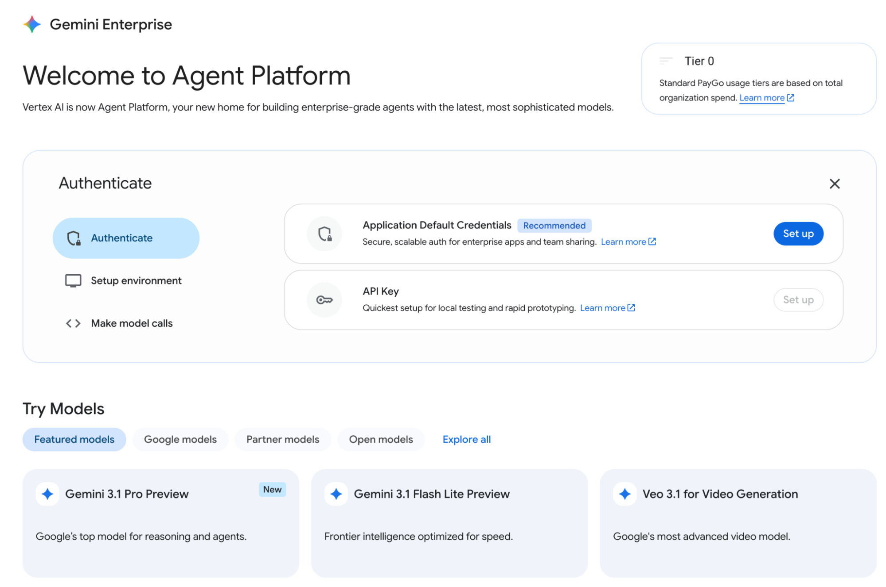
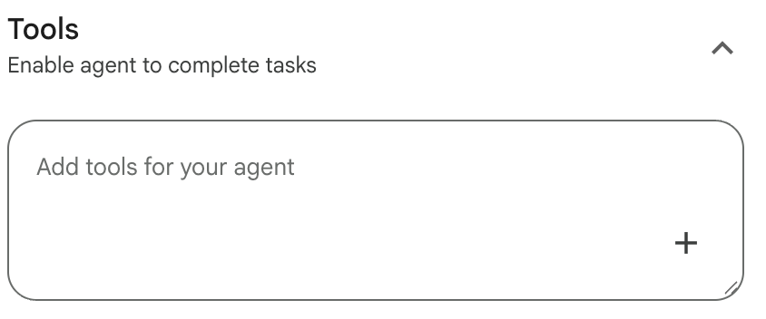
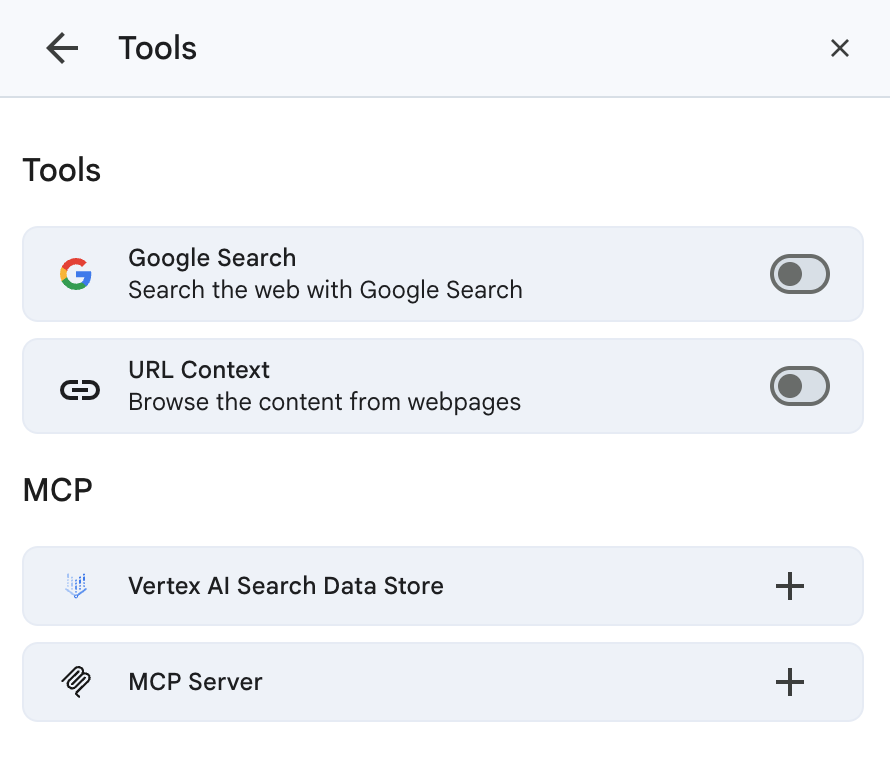
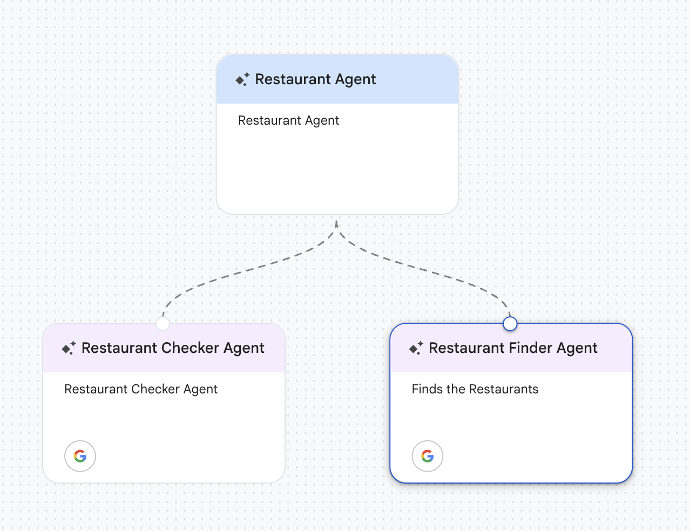
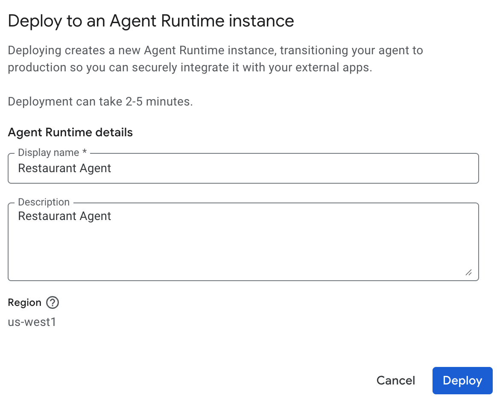
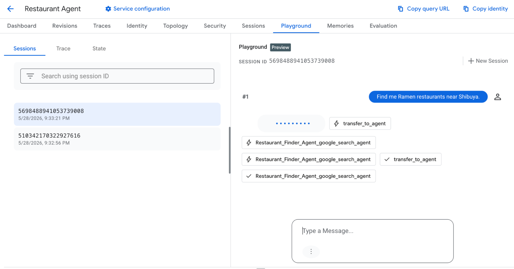

Build no-code agents in Gemini Enterprise Agent Platform
Introduction
Gemini Enterprise Agent Platform is a service in Google Cloud that allows you to build, deploy and manage enterprise grade agents. Gemini Enterprise Agent Platform can be divided into the four service categories, each containing a suite of products and services to enable agents in production. Following are those four categories.
- Build: The suite of products and services that allow you to build agents from scratch. The services allow you to build agents in multiple ways. You can build completely no code agents and depending on the requirements you can also build agents by writing code. This category contains key products and services such as Foundational Models, Agent Development Kit (ADK), Agent to Agent Protocol (A2A), Universal Commerce Protocol (UCP) etc.
- Scale: Deploy and scale agents via Agent Runtime, which features Agent Sessions and Agent Memory Bank for efficient short-term and long-term memory management.
- Govern: The Gemini Enterprise Agent Platform includes a robust governance suite designed to monitor and protect agents in production. Key services such as Agent Identity, Model Armor, and Agent Anomaly Detection provide the essential framework for maintaining security and operational integrity.
- Optimize: This layer offers various techniques for enhancing agent quality and performance, utilizing key services such as Agent Observability, Agent Optimizer, and Agent Evaluation.

Figure 1: Gemini Enterprise Agent Platform Services
Building No-Code Agent
You can create and deploy simple agents in Gemini Enterprise Agent Platform using GUI and without writing any code. In this blog we will create a simple Restaurant finder agent in Gemini Enterprise Agent Platform and deploy it.
You can build no-code agents using Studio in Agent Platform. Follow the following steps.
- Go to Google Cloud Console. In the search bar type “Agent Platform” that should take you the Agent Platform services. Once you get there click Studio from the side menu. You should see the following screen

Figure 2: Agent Platform Studio
- On the side bar click Agents.
- Click the “Create Agent” button. You will see the Agent Designer interface.

Figure 3: Agent Creator Interface - Click on the “My Agent” bar and you should be able to see the details of the Agent. Change the details of the agent as you see fit. See example below.
You can add following information,
Name: The name of the agent
Description: The agent description
Instruction: This contains detail instruction of what the agent is supposed to do
Model: Selection of foundation model you want the Agent to use

Figure 4: Agent details interface - You can also allow the agents to use Tools. To add the tools, click “+” in the Tools section in the Side bar.

Figure 5: Agent Tools Interface - Currently following tools are supported, you can add Google Search Tools for performing Google Search, URL Context tool to add the content
of a URL in the content. You can also extend the Agent using MCP tools. You can add Vertex AI Search Data Store to provide information from
private data source and a custom MCP Server.

Figure 6: Add Tools to the Agent - You can also delegate the task to sub-agents by adding another layer of sub agents. To add sub agents Click on the Agent and click “+” Button.

Figure 7: Adding Sub agents - We can create a restaurant finder agent by asking the top level agent to delegate the task of finding the restaurant and then checking the results using a checker agent.

Figure 8: Agent structure - In this case we can add following instructions to each of the agents,
Restaurant Agent
Instructions:
Execute the following Flow - Use the Restaurant Finder Agent sub agent to find the list of Restaurants
- Once you get the response, use Restaurant Checker Agent to get the confidence score.
- Display both the Confidence Score and the Restaurant information to the user.
Tools: None |
Restaurant Finder Agent
Instructions:
Find the restaurants and provide information about them in the following format, 1. Restaurant Name and Address 2. Ratings 3. Menu items and price
eg. User query: Find me a restaurant near Shibuya Station
Expected Response: Shibuya Ramen, Shibuya, 5 mins from shibuya station Rated 4.5/5 Available menu: Tonkotsu Ramen: 800 Yen Miso Ramen: 900 Yen
Once the result is retrieved ask the Restaurant Checker Agent to check the response
Tools: Google Search Tool |
Restaurant Checker Agent
Instructions:
Look at the user prompt and see the response is correct, The response should be a list of restaurants in the following format
- Restaurant Name and Address
- Ratings
- Menu items and price
Look at the results and compute the Confidence Score with max score being 5, eg. 4.5/5 and send back.
Tools: Google Search Tool |
Testing the No-Code Agent
To test the agent press the Preview button on the Agent Design Interface. You can test it as follows.

Figure 9: Testing Agents
Deploying the No-Code Agent
To deploy, press the “Deploy” button.

Figure 10: Deploy agent to Agent Runtime
On the above screen, press Deploy again, the agent will be deployed in Agent Runtime.
Test the Deployed Agent
Go to the Agent Runtime by following the following link,
https://console.cloud.google.com/agent-platform/runtimes
You will see your deployed agents there.

Click on your agent (Restaurant Agent) and click Playground.

Figure 11: Testing deployed agent in Agent Runtime
You will be able to test your agent in this interface.
Extend your Agent with ADK
If you prefer building with ADK for complete oversight of your agent, simply navigate to the Agent Designer Interface and select the "Get Code" option.

Figure 12: Extending the Agent with ADK
Conclusion
Throughout this article, we examined the following key areas:
- Overview of the Gemini Enterprise Agent Platform
- Creating no-code agents within the Agent Platform
- Agent deployment and verification using Agent Runtime